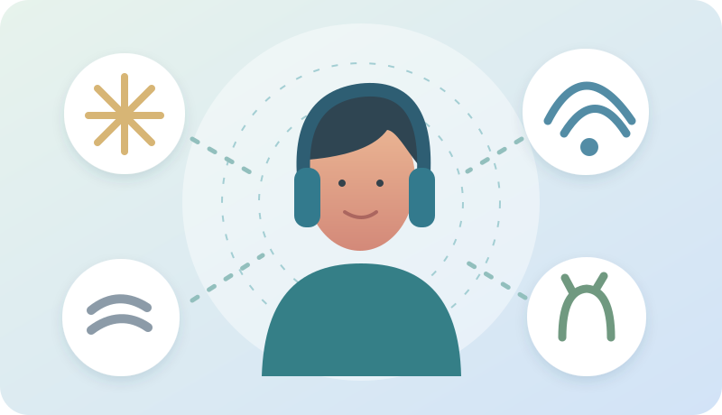

✓
6 Fragen · validiertes ScreeningASRS v1.1
Originaler deutscher Kurzfragebogen mit korrekten Antwortschwellen und Auswertung.
Vergleiche Screening, diagnostische Interviews und Autismusmerkmale. Übe mit Erwachsenen-Fallbeispielen und sieh nachvollziehbare, vorsichtig interpretierte Auswertungen.

Wie beeinflussen Ablenkung, Planung und Reize den Alltag? Entdecke fünf große Illustrationen, sieben interaktive Erklärungsszenen und ein kleines Wissensquiz. Jede Animation lässt sich pausieren.
Visuelles Lernstudio öffnen →Antworten und Notizen sind sensibel. Ohne Aktivierung bleiben sie nur bis zum Neuladen erhalten. Mit „Lokal sichern“ kannst du sie ausdrücklich nur in diesem Browser speichern und bei einem späteren Besuch wieder öffnen. Auf gemeinsam verwendeten Geräten nicht empfohlen.
Lokale Sicherung ist ausgeschaltet.
Originaler deutscher Kurzfragebogen mit korrekten Antwortschwellen und Auswertung.
Aufbau, Experteninterview und eigenständige Lernübung zu den DSM-5-Kriterien.
Gemeinsames Auftreten, Überschneidungen, Unterschiede und Einordnung.
Eigenständig formulierte Fragen statt einer Kopie von DIVA-5. Fünf zusätzliche Alltagsbereiche, ein fiktiver Fall und eine ausführliche beschreibende Auswertung.
Übungstest öffnen →ASRS: 0–6 positive Antworten nach Originalregel. Eigener Kriterien-Trainer: Symptomzählungen getrennt nach Erwachsenenalter und Kindheit. Autismus-Lernfragen: Themenprofile ohne Grenzwert. AQ-10: optionale Eingabe eines separat ermittelten Originalwerts.
Fünf anonym-fiktive Erwachsene zeigen Unaufmerksamkeit, Hyperaktivität, Autismus, AuDHS und mögliche andere Ursachen ähnlicher Symptome.
18 Fallentscheidungen üben ↗Die sechs Fragen beziehen sich auf die letzten sechs Monate. Wähle pro Frage eine Antwort. Das Originalverfahren gewichtet die Antworten je nach Frage unterschiedlich.
Bearbeite neun Merkmale der Unaufmerksamkeit und neun der Hyperaktivität/Impulsivität. Jede Übung fragt nach dem Erwachsenenalter und der Zeit vor dem 12. Geburtstag. Die Formulierungen und Beispiele stammen aus diesem Lernmaterial.
Auch viele bejahte Symptome reichen allein nicht aus. Fachleute erheben zusätzlich Entwicklung, Dauer, Lebensbereiche und andere Ursachen.
Bereiche mit relevanten Auswirkungen (Mehrfachwahl)
DIVA-5 steht für Diagnostic Interview for ADHD in Adults, Version 5. Es ist ein strukturiertes, fachlich geführtes Interview zur ADHS-Diagnostik bei Erwachsenen, kein anonymer Online-Selbsttest.
9 Unaufmerksamkeits- und 9 Hyperaktivitäts-/Impulsivitätskriterien.
Aktuelle Merkmale und Entwicklungsanamnese vor dem 12. Geburtstag.
Arbeit/Ausbildung, Partnerschaft/Familie, soziale Kontakte, Freizeit, Selbstbild.
DIVA-5 untersucht die ADHS-Kernsymptome. Autismus, Depressionen, Angststörungen, Schlafprobleme, Traumafolgen und andere Erklärungen erfordern eine zusätzliche, unabhängige fachliche Einschätzung.

Interaktiver Reizregler mit Erklärung, warum Reizempfindlichkeit nicht allein für eine Diagnose ausreicht.
Sensorik-Animation öffnen ↗Für AuDHS ist eine eigene Betrachtung autistischer Merkmale wichtig. Dieser Lernfragebogen ist selbst verfasst. Er bildet Kommunikations-, Routinen-, Interessen- und sensorische Bereiche ab, ohne einen klinischen Gesamtwert vorzutäuschen.
Der AQ-10 besteht aus zehn festgelegten Fragen. Nach NICE kann ein Wert ab 6 von 10 eine umfassende Autismusabklärung begründen; auch bei niedrigerem Wert kann aufgrund der klinischen Einschätzung eine Abklärung sinnvoll sein.

Die Schaugrafik vergleicht die Bereiche. Ein interaktives Modell erklärt die Überschneidungen, ohne daraus einen gemeinsamen Diagnosescore zu bilden.
AuDHS-Grafik erkunden ↗AuDHS ist eine gebräuchliche Kurzbezeichnung für das gemeinsame Auftreten von Autismus und ADHS, keine zusätzliche eigenständige Diagnosekategorie. Beide Bedingungen können sich überlagern oder gegenseitig verdecken.
Eine Person wünscht feste Routinen, scheitert aber an deren konsequenter Umsetzung.
Ausgeprägte Fokussierung auf ein Interessengebiet kann neben starker Alltagsablenkbarkeit bestehen.
Spontane Äußerungen, das bewusste Überspielen sozialer Unsicherheit und Reizüberlastung können zusammen auftreten.
Mit gezielten Hilfen, einer fachlichen Erklärung nach jeder Antwort und einer getrennten Lernpunktzahl ohne diagnostische Bedeutung.
Geführte Fallwerkstatt starten ↗Nutze die passenden Lernanimationen vor oder nach einer Fallbesprechung: Aufgabenorganisation, soziale Situationen oder AuDHS.
Erklärbilder öffnen ↗Alle Personen und Situationen sind erfunden. Wähle einen Fall, beantworte die Lernfragen gedanklich und öffne anschließend die fachliche Musterlösung. Es werden keine Testscores behauptet.
Jedes Ergebnis wird in vier Schritten erklärt: Was wurde gezählt? · Was bedeutet das? · Was bedeutet es nicht? · Was kann man als Nächstes tun?
Hier lassen sich die Ergebnisse des eigenständigen 41-Antworten-Übungstests ergänzen, ohne sie mit dem ASRS oder DIVA-5 zu einem erfundenen Diagnosescore zu vermischen.
Bisher wurde kein Übungstest importiert.
Importierte Daten werden erst nach deiner Auswahl verwendet.
Der Export ist optional. Freitextnotizen werden mit exportiert – die Datei deshalb vertraulich behandeln. Die App übermittelt keine Antworten an einen Server.
Nicht alle genannten Verfahren sind als freier Selbsttest gedacht. Die Unterschiede zwischen Screening, rückblickender Anamnese und Diagnostik sind zentral.
Stand: 10. November 2026. Keine personenbezogenen Konten, externe Bibliotheken oder Tracking-Dienste.